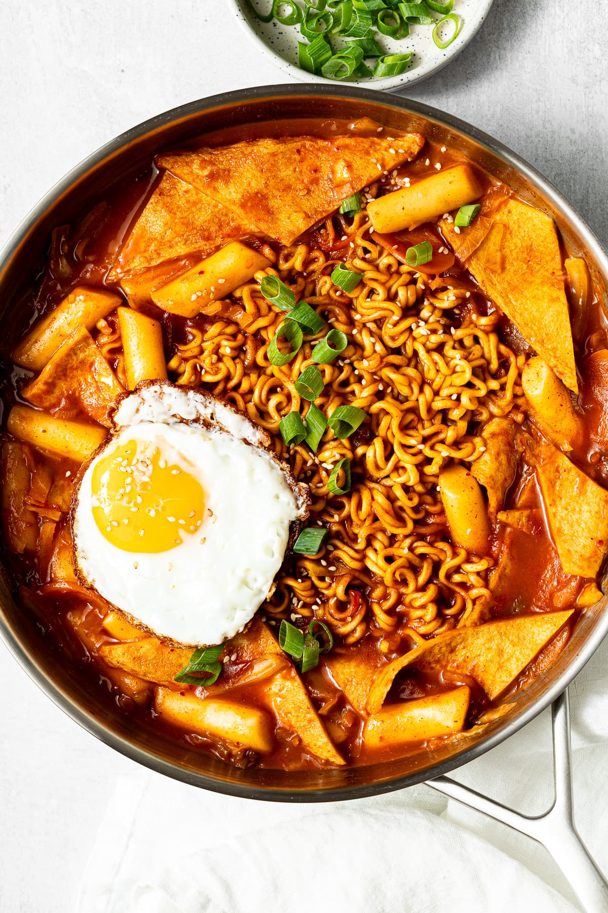

Description
Sausage Rabokki is a hearty, amplified version of the classic Korean
Tteokbokki. By combining "Ramyeon" (ramen noodles) and "Tteokbokki" (rice
cakes), then adding sliced cocktail sausages, this dish transforms from a
light snack into a filling, savory meal. The sausages add a smoky, salty
depth to the sauce that balances the intense heat of the gochujang.
The magic of Rabokki lies in the sauce reduction; as the ramen noodles
cook directly in the spicy broth, they absorb the liquid, becoming
incredibly flavorful while thickening the sauce into a rich glaze. It's a
messy, glossy, and deeply satisfying dish that represents the best of
modern Korean "soul food."
Ingredients
- 1 lb cylindrical rice cakes
- 1 pack instant ramen noodles (discard the flavor packet)
- 5 cocktail sausages (sliced into rounds)
- 2 1/2 cups water
- 2 tbsp gochujang (Korean red chili paste)
- 1 tbsp sugar
- 1 tbsp soy sauce
- 1 tsp minced garlic
- 1 stalk green onion (chopped)
- 1/2 tbsp gochugaru (Korean chili flakes)
- 1 tsp sesame oil
- 1 hard-boiled egg
Steps
-
Soak the Cakes: Soak the rice cakes in lukewarm water
for about 10 minutes to ensure they cook evenly without cracking.
-
Create the Base: In a large skillet, bring the 2 1/2
cups of water to a boil. Stir in the gochujang, sugar, soy sauce,
garlic, and gochugaru until the sauce base is a smooth, vibrant red.
-
Simmer Aromatics: Add the soaked rice cakes and the
sliced sausages to the boiling liquid. Let them simmer for about 5
minutes until the rice cakes start to soften.
-
Add the Ramen: Place the dry ramen noodle block
directly into the center of the pan. As the noodles soften, use a fork
or chopsticks to gently pull them apart so they are fully submerged in
the sauce.
-
The Reduction: Cook for another 3 to 4 minutes. The
starch from the noodles and rice cakes will thicken the sauce
significantly.
-
Final Toss: Once the noodles are tender, add the
chopped green onions and the hard-boiled egg. Stir gently to coat
everything in the glaze.
-
Serve: Turn off the heat and stir in the sesame oil for
a glossy finish. Serve immediately in a shallow bowl.
Jump to top!